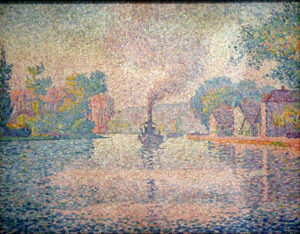
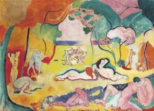
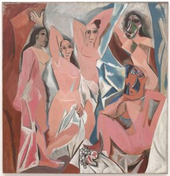
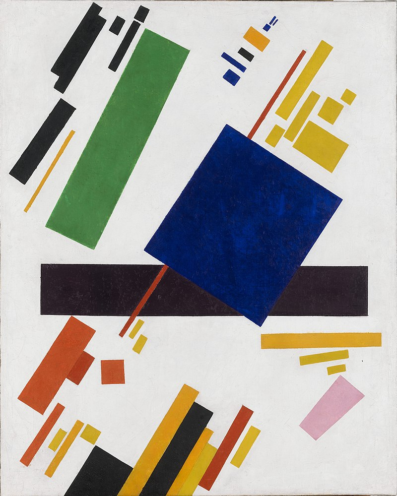

Abstract art is a non-objective art form that breaks traditional, realistic art styles. It intends to inspire emotion and intangible experience, rather than telling a story or portraying realistic subjects.


1. Pointillism
Perhaps the first version of abstract art was Pointillism. Pointillism grew out of Impressionism and is usually discussed as part of Neo-impressionism. It was founded in 1886 by the French painter Georges Seurat (1859-1891). Seurat was academically trained at the Ecole des Beaux-Arts in the style of realism. However, in the mid 1880’s he began to diverge from the traditional path.
2. Fauvism
Fauvism was an early 20th century movement founded by a group of artists called Les Fauves. The movement was short lived, only ranging from 1904-1910. Les Fauves only had three exhibitions. At the Salon d’Automne of 1905 in Paris, French painter Henri Matisse (1869-1954) exhibited his Woman with a Hat. The art critic Louis Vauxcelles came up with the term Les Fauves to describe the artists like Matisse that were exhibiting in that style. Vauxcelles called them this because of the vivid coloration and wild brushstrokes they assaulted upon their canvases. In French, the term Les Fauves translates to mean wild beasts.
3.Cubism
Another highly influential movement of the early 20th century was Cubism. Developed between 1908-1914 by the Spanish Pablo Picasso alongside French artist Georges Braque, Cubism was inspired by the work of Paul Gauguin and Paul Cezanne. The Impressionists had developed the use of different points of view and the post-Impressionists utilized flattened picture planes. Cezanne began breaking up his canvas into “multifaceted areas of paint.”
4.Suprematism
In Russia, the new form of Cubism was branded as Suprematism by the Polish-Ukrainian artist Kazimir Malevich (1879-1935). Malevich initiated the movement at the last Futurist Exhibition in St. Petersburg. During the 1915 exhibition, Malevich and others exhibited works in the Suprematist style which was a simplified version of Cubism typically featuring flat irregular rectangles on a pure background.
5.Op art
The term Op Art was first used in a 1964 article, about Polish artist Julian Stanczak’s (1928-2017) show Optical Paintings. The article was published in Time Magazine. The term was short for Optical Art. It refers to an art movement in the 1960s and 1970s in which abstract art was being produced in a way that involved optical illusions. Artworks were typically created by combining black and white shapes in a way that gave the impression that movement was occurring when it was not. As viewers approached these pieces they seemed to move, flash or warp or hidden images appeared from certain angles and not from others. Sometimes called, Trompe L’oeil, or “trick of the eye” in French, the illusionary affect was Another form of abstract art, Optical art was influenced by Neo-Impressionism, Cubism, Futurism and Dada art. However, perhaps the most influential movement was constructivism which gained popularity in the Bauhaus.